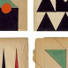

HI!
my name xxfei~
我正在寻找一份前端工程师工作
- 个人
信息 - 工作
经验 - 技能
- 作品集
姓名：xxfei
年龄：xx
手机：178...
邮箱：jxfei163@163.com
自我评价：
伪技术宅，二次元~
喜欢运动、电影、动漫、各种书?
编码！
要不断学习英语o(>﹏<)o~
web前端的路上~
- 个人
信息 - 工作
经验 - 技能
- 作品集
在校大学生一枚
丰富有趣的大学生活~
~c、c++、c#、数据结构、网络、操作系统、信息管理、运维...~~
前端工程师
2017/3
一个新的开始~
未来路在何方...
What is the future ？
- 个人
信息 - 工作
经验 - 技能
- 作品集
100%
50%
-
前端工具
-
H5CSS3
-
前端框架
-
JS、JQ
- 个人
信息 - 工作
经验 - 技能
- 作品集
-
bootstrap
-
react
-
angular
-

vue
-
移动端
-
PC端
THANK YOU!
如果你对我感兴趣
可以联系我
qq：1067666937